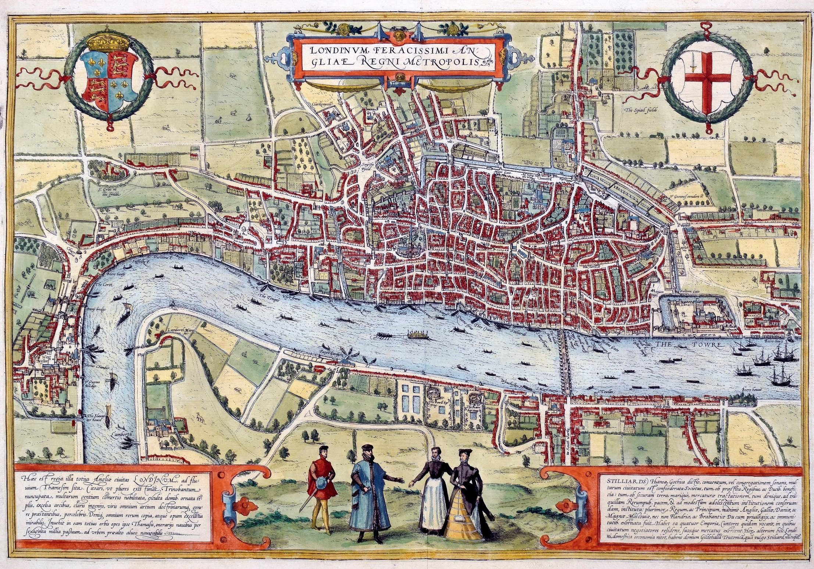

Neolitik Çağ ve Bronz Çağından, M.Ö.1500'lerden kalma izler bulunmasına ve Antik Britonlardan kalma yerleşim katmanının bilinmesine karşın Londra'nın yaklaşık 2 bin yıl önce Romalılar tarafından kurulduğu kabul edilmektedir. MÖ 43 yılında Roma İmparatorluğu'nun Britanya'yı işgali sonrasında Londinium ismi ile kurulmuştur. İsmin kökeni ile ilgili kesin bilgiler olmamakla beraber, anlamının "akan nehir" olabileceği düşünülmektedir. Monmouthlu Geofrey'e göre isim aslında Kelt tanrılarından Ludd'a dayanmaktadır. Efsaneye göre eskiden "Trinovantum" olarak anılan şehrin adı "Caer Ludd" olarak değiştirilmiştir.

Londra dünyanın eski kentlerinden birisidir. Turizm bakımından ise tarihi eserler büyük müzelerde sergilenmektedir. Kültürleri gerçekten bin yıl önceden dünyaya yayılmaya başlamıştır. Londra'ya dünyanın her tarafından ziyaretçiler gelmektedir. Bu da Londra' nın köklü bir tarihe sahip olmasının sonucudur.
Londra altı Dünya Miras Alanı içerir:
Diğer görülecek yerler arasında Buckingham Sarayı, London Eye, Piccadilly Circus, Aziz Paul Katedrali, Tower Bridge, Big Ben, Windsor Şatosu, British Museum, National Gallery, Londra Zindanı, Hyde Park, Trafalgar Meydanı ve The Shard yer almaktadır. Londra metrosu, dünyanın en eski yeraltı demiryolu ağıdır.
Kaynak: Londra - Vikipedi